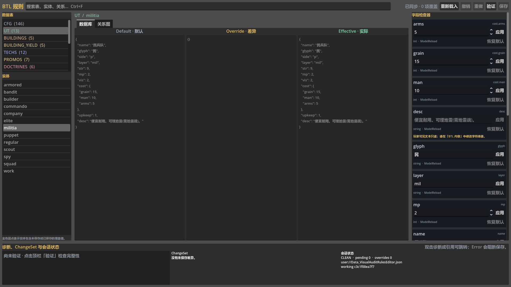
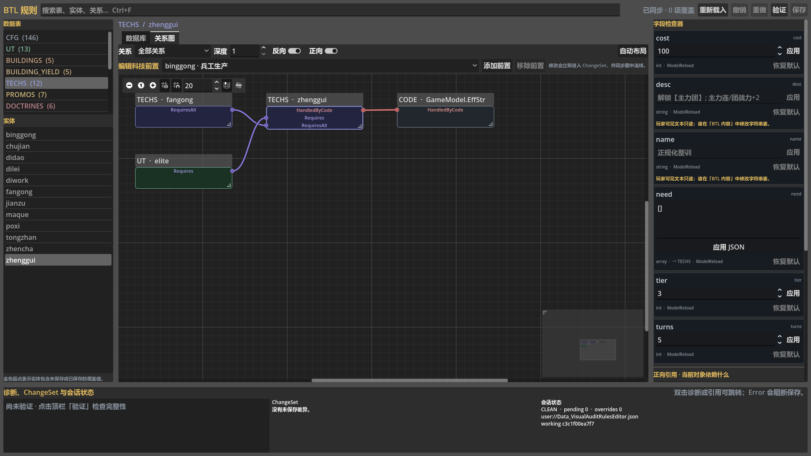

解决“改得动，却不知道会影响谁”
文明类游戏的数据量会持续增长。单位、建筑、科技、产出、条件和引用一旦分散在不同表格里，最危险的不是填错一个数，而是改完后无法回答“默认是什么、谁覆盖了它、哪些对象依赖它、保存后是否仍然自洽”。
统一查看
同一行直接呈现默认值、当前覆盖值和运行时有效值，不再靠来回对照源码与 JSON 猜测。
理解影响
关系图同时显示“它引用谁”和“谁引用它”，适合检查科技链、单位解锁和跨表依赖。
阻止坏数据落盘
类型、范围、断链、科技环路和关键业务约束都在保存前统一检查；错误会明确阻止保存。
让 Agent 可控地工作
Agent 用 set、clear 或 apply 的 dry-run 输出供人审阅，再按统一 CLI 契约执行写入；不能修改默认表、绕过验证或覆盖已变化的差异文件。
Script_GameData.gd 仍是默认规则的唯一权威来源。BTL 规则编辑器只维护项目级差异，并输出 Data_BalanceOverrides.json；删除一个覆盖项就会回到默认值，而不是复制一份新的默认表。
从 Godot 顶部主屏幕进入
打开 BehindTheLines 工程后，在 Godot 顶部主屏幕切换到 BTL 规则。编辑器分为数据库和关系图两个核心视图：先在数据库中选择表与记录，再在关系图中查看该记录的依赖网络。
- 左侧选择数据表、搜索并定位记录。
- 中部编辑当前记录的类型化字段。
- 右侧或关系图视图检查正向、反向引用。
- 顶部状态区区分待处理变更、验证结果和已保存状态。

Default、Override、Effective 是三种不同事实
| 列 | 含义 | 什么时候会变化 | 是否写入差异文件 |
|---|---|---|---|
| Default默认值 | 来自 Script_GameData.gd 的项目基线。 | 只有源码默认表发生有意变更时。 | 否；编辑器中只读。 |
| Override覆盖值 | 策划针对当前项目明确设置的差异。 | 在字段中新增、修改或清除覆盖时。 | 是；仅保存确实存在的覆盖。 |
| Effective有效值 | 游戏实际采用的结果：有覆盖则取覆盖，否则取默认。 | Default 或 Override 任一变化时自动重算。 | 不重复写入；它是计算结果。 |
字段不是一律当作文本
编辑器根据字段类型提供对应输入与校验：布尔值使用开关，整数和小数进行数值解析与范围检查，枚举限制在可选集合，引用字段要求目标真实存在。列表、字典和结构化值也必须保持既定形状，避免“看起来像 JSON、运行时却不是预期类型”的隐性错误。
搜索与定位
先选表，再按 ID、显示名称或可见字段搜索。搜索只改变当前列表，不会删除记录或修改关系图数据。清除搜索即可返回完整表；从关系图选中节点时，也可以回到数据库查看其具体字段。
清除覆盖，而不是手工抄回默认值
如果一次实验结束，应执行“清除覆盖”，让 Effective 自动回落到 Default。把 Override 手工填写成与 Default 相同虽然数值相等，却会制造无意义差异，并让未来默认值升级无法自然继承。
玩家可见名称、说明和其他可本地化文案由 BTL 内容维护。规则编辑器可以展示对应键或只读信息，但不要把翻译文本塞进数值覆盖文件。
科技树只是关系图的一种视图
选中记录后，关系图会从该节点展开直接或多层依赖。它既能看当前对象引用了什么，也能反查有哪些对象引用当前对象，因此特别适合回答“删掉这个科技会断掉谁”“某建筑为什么被这条规则影响”。

正向关系
从当前记录出发，查看它直接引用的前置、解锁对象或其他目标。适合追踪“这个规则依赖哪些条件”。
反向关系
反查所有指向当前记录的对象。适合删除、改名或重构前确认影响面。
深度与类型筛选
一层用于快速核对直接边，多层用于理解传播链；按关系类型收窄画面，避免大图失去可读性。
自动布局
筛选条件改变后重新排布节点，恢复稳定可读的图形；布局只影响显示，不修改游戏规则。
直接编辑科技前置
选中科技节点后，可以新增或移除前置科技。操作会立即反映到图上的边，并进入同一套 Undo / Redo 与验证流程。新增前置前先用反向关系查看依赖者；若形成环路，验证会报错并阻止保存。
- 定位目标科技在数据库搜索科技 ID 或名称，再切换到关系图。
- 检查两种方向先看现有前置，再反查依赖该科技的下游节点。
- 新增或移除边从合法候选中选择前置；删除时确认不会让关键路径失去入口。
- 调整深度并自动布局检查至少两层关系，确认没有意外捷径或孤岛。
- 运行验证只有断链、环路和业务约束全部通过后才保存。
保存是一次受保护的提交
编辑中的变化会先保留在待处理状态。验证通过并明确点击保存后，编辑器才会生成新的差异文件；看到 Effective 已变化不等于已经落盘。
| 检查类别 | 会捕获的问题 | 结果 |
|---|---|---|
| 类型与范围 | 数字格式错误、越界、枚举非法、结构形状不匹配。 | 错误阻止保存。 |
| 引用完整性 | 目标不存在、记录改名后仍有旧引用、跨表断链。 | 错误阻止保存。 |
| 科技拓扑 | 自引用、互相依赖或更长的科技环路。 | 错误阻止保存。 |
| 业务规则 | 建筑产出等关键字段不满足模型约束。 | 错误阻止保存。 |
| 代码绑定覆盖 | 数据记录与必须存在的运行时代码绑定不一致。 | 错误阻止保存。 |
落盘保护
保存过程会基于读取时的精确字节哈希进行比较，并在目录锁下原子替换文件。若其他编辑器、Agent 或外部程序已经改过同一文件，陈旧会话不会直接覆盖新内容；先重新加载、复核差异，再保存。损坏文件与未来版本的未知结构会 fail closed，编辑器不会把无法理解的数据当作空配置覆盖。需要恢复时可使用最近一次 .previous 备份。
唯一输出
res://Data_BalanceOverrides.json文件只保存相对默认表的版本化差异，不包含整份 GameData，不包含凭据，也不承载图像生成历史。运行时从每个模型自己的 model.tables / model.cfg 读取合并后的副本；编辑器不会修改进程级规则常量。
- 保存前错误计数为 0。
- 只留下真正需要的 Override。
- 确认待处理变更与本次设计目标一致。
- 保存完成后状态明确变为已持久化。
- 外部文件有变化时先重新加载。
- 运行快车道与全量回归再提交。
用 dry-run 审阅，再按统一契约写入
简单修改使用 set 或 clear 的 dry-run，批量方案使用 apply --changes … --dry-run，由同一条真实写动作返回拟议差异和验证结果。rules changeset 只导出当前 CLI 会话的 ChangeSet envelope；CLI 每次调用都是独立会话，因此单独调用时通常没有拟议操作，也不是持久化审批状态机。
- 读取当前状态先用
show、diff或关系查询确认目标，并记录返回的sourceHash。 - 先做 dry-run简单变更调用
set或clear；批量变更调用apply --changes …。保留完整参数，预览差异并完成规则验证。 - 人工复核结果检查 Default、拟议 Override、Effective 和受影响关系；不要把独立的
changeset输出当成已保存的批量方案。 - 显式执行写入复核后去掉 dry-run，并传入读取时的
--expected-hash；验证通过且哈希未变化时，CLI 原子更新Data_BalanceOverrides.json。 - 处理 CAS 冲突退出码 4 表示源文件已经变化。重新读取最新状态、重放修改并再次验证，不能强制覆盖。
Agent 不能修改默认表、不能绕过验证或 CAS，也不能把凭据或美术生产元数据写入规则差异。GUI 中的待处理修改由用户显式保存；CLI 写入则必须明确使用非 dry-run 调用并带上最新 sourceHash。两条路径最终都只维护差异文件。
BTL 规则、数值、内容各管一层
| 工具 | 最适合的任务 | 不要在这里做 |
|---|---|---|
| BTL 规则 | 浏览完整 GameData、编辑深层字段、检查跨表引用、调整科技前置、审阅 Agent dry-run。 | 直接改玩家文案、图像生成记录或默认源码表。 |
| BTL 数值 | 对常用高频平衡参数进行策划友好的快速调整和比较。 | 处理复杂拓扑或用一个数字面板代替完整关系审计。 |
| BTL 内容 | 维护玩家可见文本与字符串表，处理名称、描述和本地化键值。 | 把数值、结构化引用或科技关系写入字符串表。 |
BTL 规则与 BTL 数值都可能作用于同一份平衡差异，因此不要让两个窗口长期保留各自未保存的旧状态。切换工具前先保存或放弃当前修改；收到外部变更提示后重新加载。BTL 内容输出独立的 Data_StringTable.json，职责上与规则差异分开。
三种高频使用流程
调整一组单位或建筑数值
- 写清实验目标明确指标、目标对象和可接受范围，避免“感觉调一下”。
- 搜索记录并核对 Default确认当前基线和已经存在的 Override。
- 只改必要字段输入类型化覆盖值，观察 Effective；批量操作先用
apply --changes … --dry-run预览。 - 检查关系与验证确认关联科技、建筑、单位不会因为引用变化而断链。
- 保存、运行测试、记录结论实验失败时清除覆盖，让值自然回到 Default。
重构科技链
- 从目标科技展开图同时启用正向与反向关系，深度至少设为两层。
- 记录下游影响确认单位、建筑和其他科技的解锁路径。
- 逐条增删前置每一批操作后自动布局并检查是否出现孤岛或意外捷径。
- 处理验证结果先解决断链和环路，再讨论数值平衡。
- 保存并进游戏验证编辑器验证通过不等于玩法合理，还要走完整局内路径。
审阅并执行 Agent 的批量方案
- 先生成 dry-run 预览使用
apply --changes … --dry-run保留目标、拟议差异和验证结果；它只供本次审阅，不代表已落盘。 - 先看异常项筛出大幅偏离 Default、清除既有 Override 或改变结构引用的变更。
- 用关系图抽查影响尤其检查科技、解锁和跨表引用。
- 分小批 dry-run对实际的
set、clear或apply逐批预演；问题批次先修改方案，不写文件。 - 带 CAS 写入并测试确认后用最新
sourceHash执行；写入成功仍要运行回归。
故障排查
| 现象 | 原因 | 处理 |
|---|---|---|
| 找不到 BTL 规则入口 | 插件未加载，或 Godot 编辑器仍在使用旧脚本状态。 | 确认工程插件启用；修复脚本错误后重新加载编辑器主屏幕。 |
| Override 改了，重开后消失 | 变更仍在待处理区，尚未显式保存；或保存被验证错误阻止。 | 查看状态与验证列表，解决错误后重新保存。 |
| Effective 与预期不同 | 已有 Override 优先于 Default，或修改了错误记录。 | 核对三列与记录 ID；若要继承默认值，清除覆盖而不是抄写默认。 |
| 保存提示外部冲突 | 基础文件字节哈希已变化，当前会话基于旧版本。 | 不要强行覆盖；重新加载，重新审阅待处理差异后再保存。 |
| 科技前置保存失败 | 新增边形成自引用、环路或指向不存在的科技。 | 在关系图展开两种方向，删除问题边，再运行验证。 |
| 关系图过密或节点重叠 | 展开深度和关系类型过多，或筛选后未重新布局。 | 先缩到一至两层，限定类型，再执行自动布局。 |
changeset 返回空变更 | 每次 CLI 调用都是独立会话；单独调用 changeset 只导出当前会话 envelope，不会加载此前 dry-run 的方案。 | 简单方案直接审阅 set/clear dry-run；批量方案使用 apply --changes … --dry-run。 |
| 差异文件损坏或版本过新 | 文件无法解析，或来自当前编辑器不认识的未来 schema。 | 编辑器会拒绝覆盖；保留原文件，检查 .previous 并使用兼容版本恢复。 |
本页只展示编辑器界面和通用工作流，不发布私有游戏资产、生成任务凭据或 assets/audio/ 中的 Civilization VI 对照素材。截图中的数据用于说明工具结构，不替代私有仓库中的验收记录。